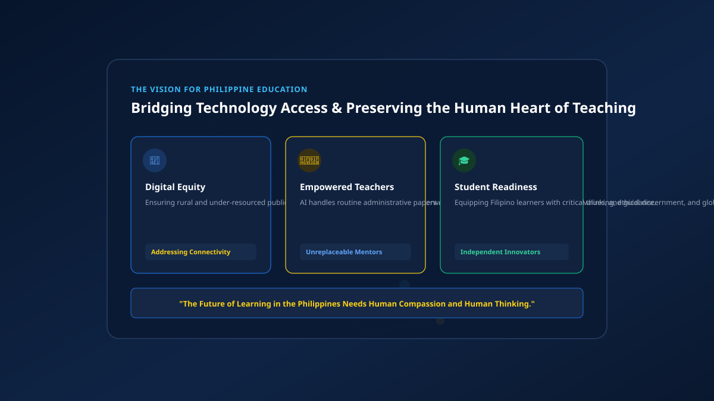

The Future of AI in Philippine Education
Navigating realistic opportunities, classroom connectivity challenges across 7,000 islands, and why human teachers remain irreplaceable in guiding Filipino minds.

Discussions about the future of artificial intelligence in education frequently oscillate between utopian hype and apocalyptic predictions. Neither extreme reflects the grounded reality of Philippine education.
The future of AI in Philippine classrooms will not be marked by automated robot teachers or virtual-reality-only universities. Instead, it will be shaped by the pragmatic challenge of integrating intelligent software tools to support teachers and learners, while aggressively addressing infrastructure inequality across Luzon, Visayas, and Mindanao.
1. Realistic Opportunities for Philippine Classrooms
When implemented responsibly, artificial intelligence offers tangible opportunities to relieve longstanding educational bottlenecks:
- Personalized pacing: Students who struggle with fundamental mathematics or foundational English concepts can receive differentiated explanations and practice questions tailored to their speed, without holding back classmates.
- Automating routine teacher paperwork: Filipino public and private school teachers spend dozens of unpaid hours each week preparing lesson plans, formatting diagnostic rubrics, and filling out administrative logs. AI can automate initial clerical drafts, giving educators more time for direct classroom teaching and student consultation.
- Multilingual bridging: AI translation tools are steadily improving at understanding Philippine languages and regional dialects. In the future, this can help students bridge complex scientific concepts explained in English with conceptual nuances in Tagalog, Cebuano, Ilocano, or Hiligaynon.
The Rural High School Science Lab
Consider a public high school in a rural municipality in northern Luzon that lacks a fully equipped chemistry wet lab. In an AI-supported classroom, a dedicated science teacher utilizes offline AI simulation prompts to guide students through hypothetical titration experiments.
The AI calculates reaction outputs, simulates color changes, and explains molecular balances based on student inputs on a single shared computer terminal. The teacher facilitates the discussion: questioning why certain compounds reacted, encouraging group debate, and connecting the science to local soil acidity in surrounding farm communities.
The takeaway: The AI provided computational modeling that budget limitations couldn't physically supply, but it was the teacher who turned that output into a living educational experience.
2. The Digital Divide and Connectivity Challenges
Any serious discourse on educational technology in the Philippines must confront geographic and economic reality. The Philippines is an archipelago of over 7,000 islands, with stark disparities in electrical grid stability, broadband infrastructure, and family purchasing power.
If educational policy assumes that every student possesses high-speed fiber internet and high-end hardware, the digital divide will widen exponentially. Students in well-funded private institutions and urban universities would surge ahead, while peers in remote public schools fall further behind.
Responsible AI adoption in the Philippines must prioritize lightweight, low-bandwidth, and offline-compatible educational tools (such as DOST’s STARBOOKS initiative) to ensure technological progress is genuinely inclusive.
3. Why Teachers Will Never Be Replaced
Sensationalist headlines occasionally proclaim that artificial intelligence will render classroom instructors obsolete. This fundamentally misunderstands what education is.
"Education is not merely data transfer; it is character formation, moral discernment, emotional encouragement, and community leadership. An algorithm cannot notice when a student is grieving, cannot inspire a discouraged child to persevere, and cannot model moral integrity."
Filipino teachers are cultural pillars in their communities. In an AI-rich future, their role will be more indispensable than ever: serving as ethical navigators who teach young minds how to question machines, evaluate bias, and prioritize human welfare.
4. What Filipino Students Can Prepare For
As artificial intelligence automates routine memorization and basic copywriting tasks, the skills that will distinguish Filipino graduates in the domestic and global workforce are uniquely human capabilities:
Future-Ready Core Competencies
- Digital Literacy & Verification: Knowing how algorithms work, how to craft disciplined inquiries, and how to rigorously audit outputs.
- Critical Thinking: The ability to challenge assumptions, synthesize opposing perspectives, and identify logical fallacies.
- Interpersonal Communication: Collaborative empathy, active listening, persuasive speaking, and teamwork across diverse cultural backgrounds.
- Complex Problem-Solving: Identifying root causes in real-world community challenges rather than applying superficial fixes.
- Adaptability & Continuous Learning: Staying agile as software tools evolve every few years.
- Ethical Technology Use: Grounding technological innovation in social justice, honesty, and civic responsibility.
Key Takeaways
- Progress requires equity: AI in Philippine education must bridge access barriers, not exacerbate regional inequalities.
- Teachers remain central: Mentorship, empathy, and ethical guidance are distinctly human and cannot be automated.
- Prepare for human skills: Deep critical thinking, communication, and creative problem-solving will be your greatest assets.
- Stay grounded: Reject both exaggerated techno-optimism and alarmist fears; view AI as a pragmatic instrument to be governed thoughtfully.